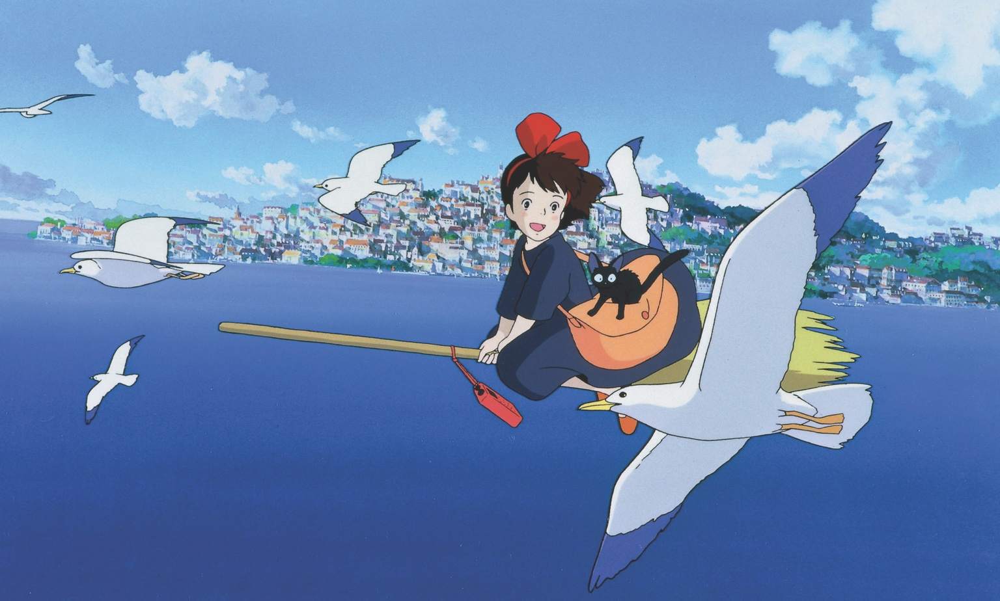

№009
Первый майский: что делать с длинными выходными, если их слишком много
Большой выпуск про время и внимание: Денискины рассказы, фланёрство, разговор про работу, свободное время, Миядзаки и детский термос.
Кадр из мультфильма «Ведьмина служба доставки».
Длинные выходные коварны. Они как большой пустой холодильник: вроде можно положить что угодно, а в итоге всё равно вечером смотришь и не знаешь, что съесть. Социолог Кэсси Холмс из UCLA, которая много лет изучает связь свободного времени и счастья, обнаружила парадокс: счастье растёт по мере появления свободных часов, но только до пяти часов в день. После пяти оно падает обратно. То есть слишком много свободного времени делает несчастным так же надёжно, как слишком мало.
Поэтому майские это не марафон выставок и культурных программ, и не тоскливое сидение в одних и тех же четырёх стенах. Это упражнение в умении заполнить большое окно времени так, чтобы оно не схлопнулось в скуку и не разлетелось на бессмысленные клочки. В этом выпуске собрано шесть вещей, на которые длинные выходные стоит потратить.